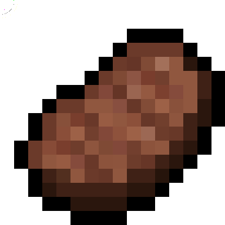

Comida
Aunque no lo creas, los gatos valoran mucho la mano que les da de comer, es importante que vea que tu le estas brindando alimento para crear un mejor vinculo con tu mascota y tratar de no incomodarlo.

Aunque no lo creas, los gatos valoran mucho la mano que les da de comer, es importante que vea que tu le estas brindando alimento para crear un mejor vinculo con tu mascota y tratar de no incomodarlo.

Debemos tener en cuenta que la carne es importante en la vida de nuestros gatitos. Ultimamente se han visto que son alimentados toda su vida solo con croquetas de gatos, estas no son malas pero a la larga pueden ser poco beneficiosas por lo cual veterinarios recomiendan darle tanto croquetas como carnes.

Existen muchos alimentos que debemos evitar que sean consumidos por nuestro gato, entre ellos: el cafe, el chocolate, la leche, las frutas, etc. Es un tema que debemos tener en cuenta ya que existen muchos alimentos que nuestras mascotan no deben consumir ya que estos pueden llegar a ser mortales. Para mas informacion puedes entrar a Alimentos mas toxicos para tu gato.